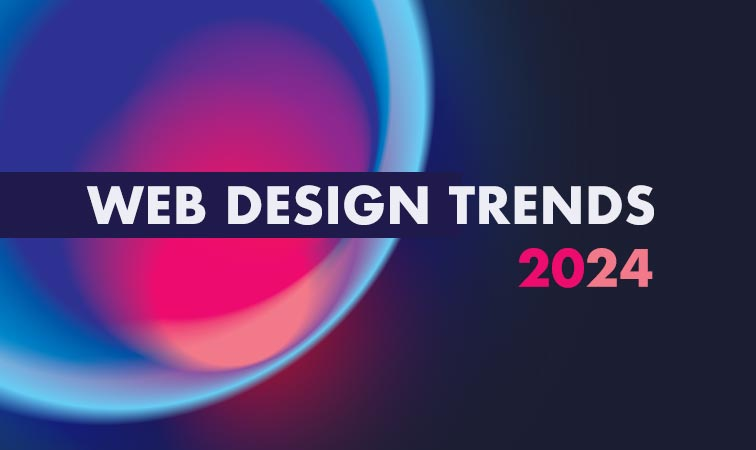

Tendencias en UX/UI
Las tendencias en UX/UI están en constante evolución, y mantenerse actualizado es clave para ofrecer soluciones innovadoras y efectivas. Algunas de las tendencias más relevantes en el diseño de experiencia de usuario e interfaces que planeo incorporar en mi trabajo son:

#1. Diseño Minimalista
El minimalismo sigue siendo una de las tendencias más fuertes, favoreciendo la simplicidad visual y funcional. Su premisa es reducir los elementos en pantalla para dejar solo lo esencial, eliminando distracciones y mejorando la claridad del mensaje.
#2. Accesibilidad Inclusiva
Diseñar interfaces accesibles para todas las personas, incluidas aquellas con discapacidades, es una prioridad. Las directrices de accesibilidad como el uso adecuado del contraste de color, opciones de texto alternativas, esto no solo mejora la experiencia del usuario, sino que también amplía el público al que se puede llegar
#3. Microinteracciones
Las microinteracciones son pequeños detalles animados que mejoran la experiencia de usuario al dar feedback inmediato. Pueden ser tan simples como el cambio de color de un botón al hacer clic o más elaboradas, como animaciones que confirman que una tarea ha sido completada exitosamente. Estas interacciones añaden una capa de profundidad, hacen que el usuario se sienta en control y aumentan la sensación de satisfacción en la navegación.
#4. Neumorfismo
Esta tendencia combina aspectos del skeuomorfismo (que imita objetos reales) y el minimalismo, usando sombras suaves y efectos de profundidad para hacer que los elementos parezcan físicos y palpables. El neumorfismo añade un toque moderno sin sobrecargar visualmente la interfaz

Estas tendencias forman parte de mi enfoque en la creación de experiencias de usuario innovadoras, inclusivas y estéticamente agradables. Adaptarlas a cada proyecto me permite estar siempre al día con las necesidades del mercado y mejorar continuamente la calidad de mis productos.
Leave a comment